8. Event Evaluation¶
8.1. Introduction¶
With this evaluation module for Indico you can create your own online web survey in order to know participants’ opinion about the conferences/seminars/lectures.
8.2. Functional goals¶
8.2.1. Security¶
Survey questions and statistical results are neither vital nor confidential for CERN members. We believe standard precautions are enough within this application. A survey will inherit access and modification rights from the event it belongs to. In other words, only users who are allowed to see an event will be able to have access and fill in the evaluation form. The survey can only be altered in the Management Area. This means that only users who are already allowed to edit an event can modify the corresponding survey and view the statistical results.
8.2.2. Usability¶
The main possible actions for the surveyor (management area) are the following:
- Create/edit an evaluation form concerning an event.
- Edit its options and status (visible/hidden).
- Possibility of setting that only logged users have access to the form.
- Create/edit questions contained in this form.
- Ability to preview a form while editing it.
- Import/export an evaluation in order to back it up or facilitate further creations.
- See the statistics of the results.
- Export statistics to a CSV file.
- Possibility of seeing/deleting individual answers in the results.
- Ability to send the evaluation link automatically by email to the participants at the start.
- Possibility of editing a survey in process even if some people have already answered it.
For a submitter (display area):
- Access to the survey via the menu of an event.
- Logged users can always modify their already submitted forms.
8.3. Interface¶
8.3.1. Management Area¶
In the Evaluation option we have four tabs: Setup | Edit | Preview | Results.
8.3.1.1. Setup¶
In this section you can set the main information and configuration about the survey. Click on to set your options.
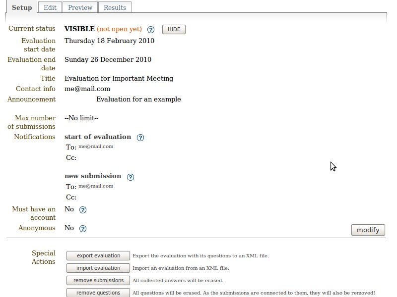
- Curent status: When an evaluation is HIDDEN (default), it is
not shown in the Display Area and guests cannot answer it. On the
other hand, it is shown if set to VISIBLE. But be aware that if you want
your survey to work properly it must be open and contain
some questions. To show/hide it, simply click on
 /
/
 .
. - Notifications: You can set email addresses of people you want to be notified when the evaluation starts and/or when someone answers the form. Advice: In the modification panel, check Add current registrants if you want your event participants to be notified of the start of the evaluation.
- Must have an account: If an account is needed, visitors must first log in before accessing the form.
- Anonymous: When anonymous, logged submitters send their form anonymously. Otherwise their identity is known by the surveyor. Note: Users not logged in can always send their form anonymously. If you really need to know the identity of all your submitters, you have to check Must have an account.
- Special Actions:
- Export the evaluation with its questions to an XML file. Useful for backing up or transporting. Note: If the file is directly shown in Firefox/InternetExplorer6, save it with: File > Save as... To solve the same problem in InternetExplorer7: Page > Save as...
- Import an evaluation from an XML file. 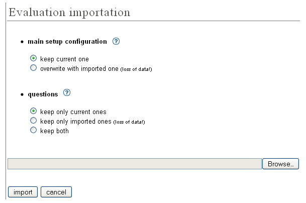 Concerning the main setup configuration (all the main information, e.g., title, announcement, etc.) you can choose to keep your current one or to overwrite it with an imported one. For the questions, you can keep only your current ones or only imported ones or have both (imported ones just after current ones). Advice: We suggest that you back up your current evaluation (with export feature) before importing in order to prevent loss of data. Notes: In order to prevent some misunderstanding the status and the dates are not imported. Be aware that as questions and submissions are bound, you will also lose your current submissions if you get rid of your questions.
- All collected answers will be erased.
- All questions will be erased. As the submissions are connected to them, they will also be removed!
- Delete all evaluation informations, its questions and its submissions. You will have a brand new evaluation.
8.3.1.2. Edit¶
In this section you can add/edit/remove the questions in your form. On the left panel you have six different types of question you can add.
 Textbox: A standard field where your submitter can
enter some text as answer to the provided question. Here is a
little example of a question of type Textbox.
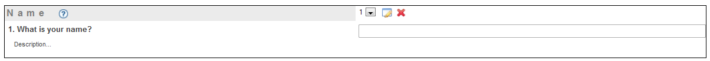
Textbox: A standard field where your submitter can
enter some text as answer to the provided question. Here is a
little example of a question of type Textbox.
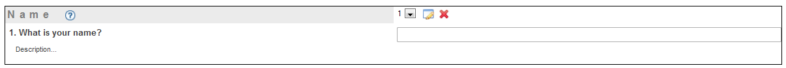- Textarea: Like Textbox but with more capacity for
text. Suitable for long answers like comments, feedbacks, etc.

- Password: Like Textbox but the answer is hidden.
For example on the picture below, it is recommended that the answer
is hidden if the submitter is in a public area. Otherwise anybody
next to him would be able to read the password on the screen. Note
that the evaluation module doesn’t use https, as all this
information is not supposed to be confidential.

 Select: A drop down list which lets the submitter
select one answer.
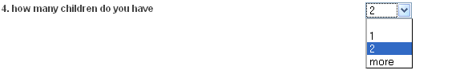
Select: A drop down list which lets the submitter
select one answer.
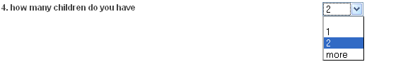 Radio: A group of radio buttons which lets the
submitter select one answer.
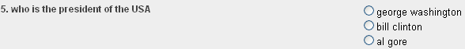
Radio: A group of radio buttons which lets the
submitter select one answer.
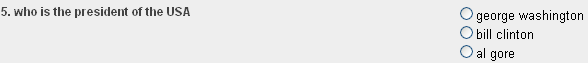- 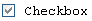 Checkbox: This type is suitable for multiple-choice questions. You can check many answers.
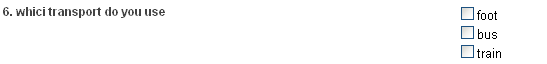
When adding a Textbox/Textarea/Password you have the screen below.
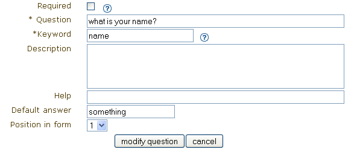
- Required: If checked, an answer for this question is mandatory.
- Question: Enter your question.
- Keyword: A keyword is the summary of the question in one word. (e.g. “What is your name?” -> “name”) It’s useful when exporting the statistics into a CSV file. Instead of writing the full question, we just write the keyword so that it takes less place.
- Description: Enter a description (optional).
- Help: Enter a help message (optional).
- Default answer: The answer to the question will already be filled in with this given default answer (optional).
- Position in form: The position of the question within the form.
On the following picture you can see the result of the manipulation.
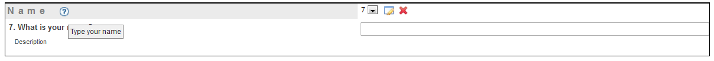
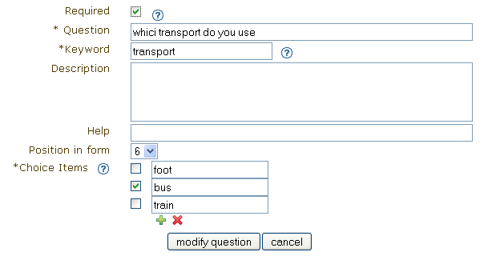
When adding a Select/Radio/Checkbox you have the above screen. Note that some fields have already been described above, that’s why they are not explained here.
- Choice Items: Choice items are answers that can be selected. Note: Check the box next to a choice item, to set it to be a default answer.
On the following picture you can see the result of the manipulation.

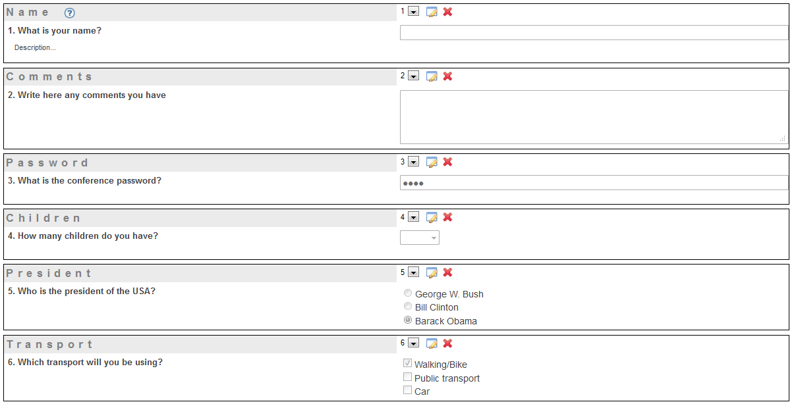
After having first added some questions, here is an example of the
questions overview (see above picture). You can change the position
of a question within the form by clicking on 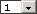. Press
 to edit a question and
to edit a question and  to remove it.
to remove it.
8.3.1.3. Preview¶
In Preview you can see what your evaluation really looks like in the display area. Feel free to play with this form, submitted information won’t be recorded.
8.3.1.4. Results¶
In this section we have the statistics. There are two panels called Options and Statistics.
In the first one you can select which submissions you want to see, remove some of them, and export all the results into a CSV file.
To import a CSV file into Microsoft Office Excel: Data > Import External Data > Import Data... > select your CSV file > Next > Uncheck Tab and check Comma > Next > Finish > OK.
In the second, you see the collected results of your evaluation shown as graphs or as answer lists depending on the question type.
Answer lists shown for Textbox/Textarea/Password:
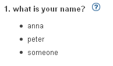
Graphs shown for Select/Radio/Checkbox:

8.3.2. Display Area¶
For a conference, you can access an evaluation via the left menu.
For a meeting/lecture, you can access it via the top menu.
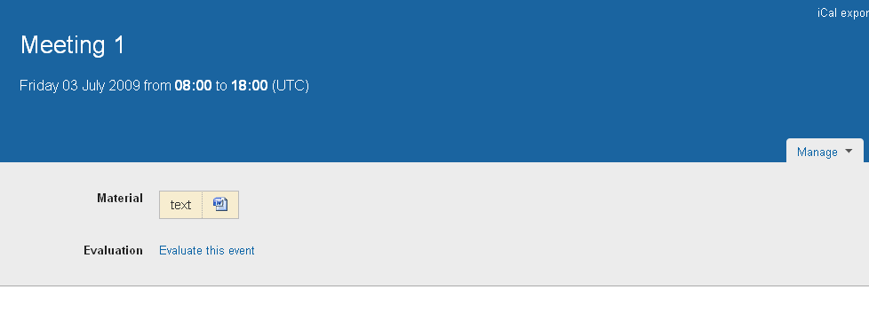